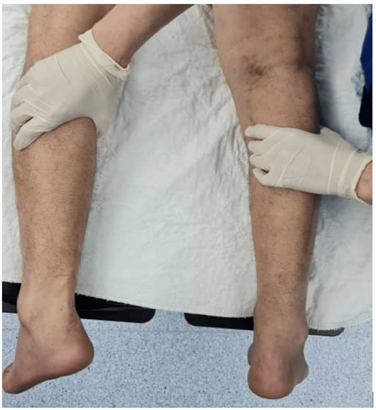

365 — Cổ chân–bàn chân: Achilles, ATFL & cân gan chân / Ankle & foot
Tags: pattern:co-chan vung:co-chan
Mức chắc chắn (certainty): tổng hợp y văn (literature synthesis) — nhóm tự biên từ y văn mở, chưa gắn ca nguyên văn đơn lẻ.
1. Tổng quan — gân Achilles yếu nhất ở vùng thiếu máu + ATFL yếu nhất mắt cá ngoài
- Đứt Achilles ở 1–6 cm trên bám gót (vùng watershed) — TẠI SAO: đoạn này ít mạch nhất + chịu lực gấp 10 lần trọng lượng khi chạy nhảy; Thompson (+) = bóp bắp chân không gấp gan chân.
- ATFL (sên-mác trước) là dây yếu nhất phức hợp ngoài — TẠI SAO lật trong (inversion) đứt ATFL trước rồi mới đến CFL: ATFL căng nhất khi gấp gan + lật trong.
- Viêm cân gan chân: cân dày > 4 mm + gai gót — TẠI SAO đau bước đầu buổi sáng: đêm cân co ngắn, sáng kéo đột ngột.
2. Gamut đau cổ chân-gót (Gamut)
- Nghe "bốp" + Thompson (+) + hõm gân: đứt Achilles cấp — khâu sớm (< 2 tuần) hoặc boot + vật lý trị liệu.
- Lật trong + sưng ngoài + ATFL mất: bong gân độ III — nẹp + tập (mổ khi mất vững mạn).
- Đau gót bước đầu + cân > 4 mm: viêm cân gan chân — đế + chích + shockwave.
- Đau gót + viêm điểm bám + HLA-B27: enthesitis SpA (bài 341) — NSAID + sinh học.
3. Bảng so sánh phân biệt (ma trận đối chiếu)
| Thực thể (entity) | Hình ảnh điển hình | Chốt vào (rule-in) | Chốt loại (rule-out) | Gợi ý xác nhận |
|---|---|---|---|---|
| Đứt Achilles | Mất liên tục + tụ máu + Thompson (+) | Bốp + không nhón gót + khe 1–6 cm | Sợi còn + phù → viêm | Siêu âm/MRI + khâu/boot |
| Bong ATFL | ATFL mất/phù + tràn dịch + lật trong | Lật trong + drawer (+) | Hõm gân + Thompson → Achilles | Nẹp + tập cảm giác sâu |
| Viêm cân gan chân | Cân > 4 mm + phù + gai gót | Đau bước đầu + cân dày | Điểm bám gót + HLA-B27 → SpA | Đế + shockwave + chích |
| Viêm điểm bám SpA | Phù điểm bám + mòn + HLA-B27 | Trẻ + B27 + lưng viêm | Cân dày đơn thuần → cơ học | NSAID + sinh học |

Bóp bắp chân không gấp gan chân = đứt hoàn toàn. Nguồn: Mohd Khalid et al., Cureus 2026 Fig. 1, CC BY 4.0.4. Protocol
- Siêu âm động + MRI khi nghi đứt/rách gân-dây; Thompson + nhón gót lâm sàng trước mọi MRI.
flowchart TD
A[Đau cổ chân/gót] --> B{Thompson/nhón gót?}
B -->|Dương| C[Đứt Achilles: khâu/boot]
B -->|Âm + lật trong| D[ATFL: nẹp + tập]
B -->|Bước đầu sáng| E[Cân gan chân: đế + shockwave]
5. Cạm bẫy
- Đứt Achilles bỏ sót 20–25% (tưởng bong gân) — Thompson + nhón gót mọi sưng gót sau chấn thương.
- Viêm điểm bám SpA cho corticoid tại chỗ mãi — HLA-B27 + lưng viêm là sinh học toàn thân.
- Bong ATFL mạn mất vững thành OA — drawer (+) kéo dài là nội soi khâu.
6. Tự lượng giá — Blind Quiz
Ca 1 — Đá cầu nghe "bốp" gót + không nhón được. Nhìn nghiệm pháp.
- Hỏi: tên nghiệm pháp? Đứt hay bong gân? Khâu hay boot?
Bấm để hiện đáp án
- Dấu hiệu (findings): bóp bắp chân không gấp gan chân = Thompson (+).
- Chẩn đoán (diagnosis): đứt gân Achilles hoàn toàn — khâu sớm khi trẻ/thể thao, boot + tập khi già/mổ nguy cơ cao.
- Nguồn: Mohd Khalid et al., Fig. 1, CC BY 4.0.
Ca 2 — Lật trong + sưng mắt cá ngoài + drawer (+): Achilles hay ATFL? (Bảng mục 3.)
Bấm để hiện đáp án
- Đứt ATFL: nẹp + tập cảm giác sâu (Thompson chỉ cho Achilles).
Bài liên quan chéo
- 300 – Tổng quan MSK
- 341 – Cột sống SpA (enthesitis gót)
- 320 – Gãy & trật khớp (gãy mắt cá)
Không dùng để chẩn đoán độc lập khi chưa có người hướng dẫn.